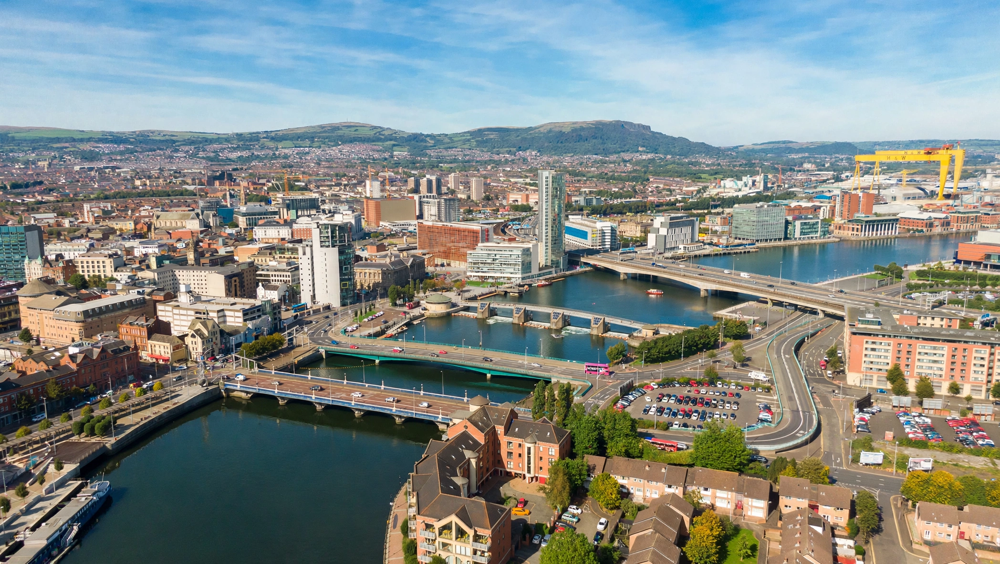

Northern Ireland is a constituent country of the United Kingdom, situated in the north-east of the island of Ireland. It was created in 1921 under the Government of Ireland Act 1920. It shares an open border to the south and west with the Republic of Ireland. Its capital and largest city is Belfast. The population was about 1.9 million in the 2021 census.
| Northern Ireland | |
|---|---|
| Capital | Belfast |
| Largest city | Belfast |
| Official languages | English; Irish and Ulster Scots recognised regionally |
| Government | Devolved legislature within a constitutional monarchy |
| Legislature | Northern Ireland Assembly |
| Area | 14,130 km² |
| Population (2021) | 1,903,175 |
| Currency | Pound sterling (GBP) |

Northern Ireland was created from six of the nine counties of Ulster, those with Protestant and unionist majorities, when Ireland was partitioned in 1921. For fifty years it was governed by a devolved unionist-dominated parliament at Stormont. Discrimination against the Catholic and nationalist minority helped spark the civil rights movement of the late 1960s and the conflict known as the Troubles, in which more than 3,500 people died.
The Good Friday Agreement of 1998 established a power-sharing Assembly and Executive, cross-border bodies, and the principle of consent. Devolved government has been suspended several times since, most recently restored in 2024.
Politics remains structured around the constitutional question: unionists wish to remain in the United Kingdom, while nationalists, rooted in the tradition of Irish nationalism, aspire to a united Ireland. The 2021 census recorded, for the first time, a plurality from a Catholic background. Following Brexit, the Northern Ireland Protocol and its successor, the Windsor Framework, keep Northern Ireland aligned with EU rules for goods to avoid a hard border on the island.
The region is dominated by Lough Neagh, the largest freshwater lake in the British Isles, and includes the Giant's Causeway on the Antrim coast and the Mourne Mountains. The climate is temperate maritime.